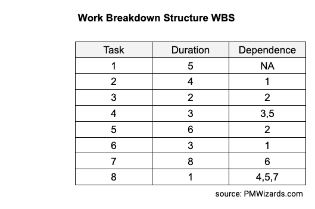
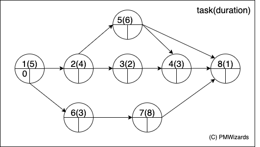
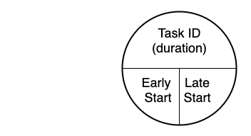
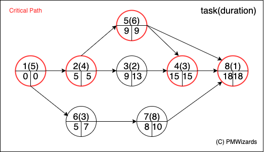

A visual device to plan task sequencing and duration
Critical Path Method CPM is a method used to
Suppose the tasks in a project are obtained from the WBS with their durations and dependences. 
The network diagram below represents the tasks in the table above:

This diagram has on the upper part of each node the task ID and its duration. On the lower part we have two slots: Early Start (ES) and Late Start (LS).

The Early Start is the earliest moment when that task can be started after all predecessors wehere completed, and the Late Start is the latest moment a task can be started.
After all calculations, that should be done by software, we get to a diagram as the one below. We learn from it that the project will take 19 days in total (not 18 because the last task, 8, takes 1 day to complete).

The Critical Path CP is the sequence of activities that represents the longest path in a project and determines the shortest possible duration for that project. The activities along the critical path have in common that Latest start date (LS) = Earliest start date (ES). In this example the CP is composed by tasks 1, 2, 5, 4 and 8.
Back to Time Management.